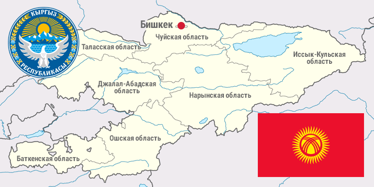
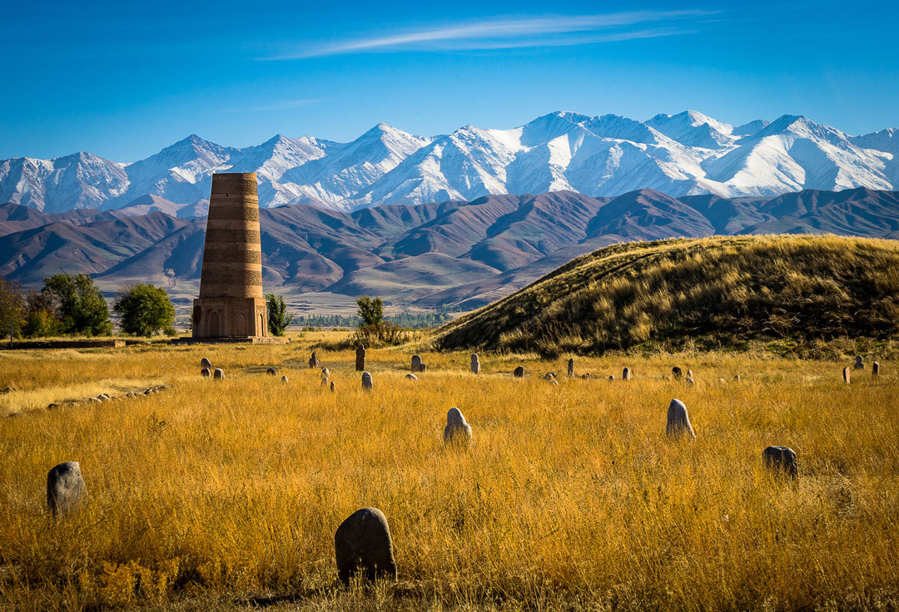
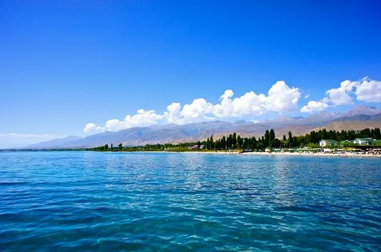

Кыргызстандын жери жана жогорку чаагына көчкүлөрдүн жана күлөктөрдүн жашоосу менен күмөлдүү түрдүү илеткен өзгөчөлүктү камтыйт. Кыргызстанга келген саякатчы бир күнде кызмат кылганда адам кызыктуу жана алпий жазгыларына, бардык жашыл жамгырларга жана көп жылдык ледниктер мен жел айларына келеби. Булдон башкаруулук саякаттар география, жануулардын дүйнөсү жана экосистемалардын байланышуу процестерин аныктагысына мүмкүнчүлүк берет. Тянь-Шань – бир миллиондуга четтүү биологиялык кийимдердин орду. Кыргызстан жайгашкан тоолордо барлыктарга дарес аныкталган. Буга чейин Кыргызстандагы тоолордо 12 мындан ашуу түрдүү жусуздуктар, 75 мындан ашуу балыктык түр, 4 түрдүү чүмүү тилкиси, 37 түрдүү жолборулар, 368 түрдүү күштөр жана 84 түрдүү маммалар бар. Бул кийимдердин көптүгү айчылдык экосистемалардын каттуу көлөмдөрү менен камтыйт. Кыргызстандын географиялык абалы бир де бир де морга чыгуу учуру жок. Бул Ортонун Азиясында жайгашкан, Тянь-Шаньдын батыш кыбылы, көбүнчү катуу абалдыларынан бири. Территориянын метражы — 199 951 кв. км. Мамлекеттик территория көбүнчү чейин 900 км батыштан чыгыштан жана 410 км солттон күнөнө чейин тараптан тарапкын. Кыргызстан батыш жана батыштан түнүгө, солттондон солттоңго Кытай менен, түнүгүнө Казакстан менен, батышка Ўзбекистон менен жана түштөн түшке Тажикстан менен байланышат. Жактырылган жеткиликтердин биринчи пайда болгону — Сталиндинг Ортонун Азиясынын беш республикасына бөлүнүшүдүн нөлдөрүн кылууду энэ Кыргызстандагы көптүгү этнический кыргыздарды колдонуп калган. Алар Тажикстандагы Памир жеринде, Ўзбекистон менен Казакстандагы жерлерде калган. Улардын бир нече энклав жасалды, булар Кыргызстандын жасалган жеринин мүддөөтө чейинге айланган, ал энклав жерлерге айланган жерлер Кыргызстандын келчилик чаагынан бирнеше километрге бураккан, эки Узбекистанда жана бири Тажикстанда. Ангыртуу чалкыш системасы Тянь-Шань — дүйнөдөгү эң динамалуу чалкыш системалардын бири. Өткөн жүз он жүз учургуча аркылуу 90%-дан ашык территория Кыргызстандын тоосу менен чолдук көйлөрүн каптады. Кыргызстандын ортача жылынышы — 2 750 метр, 394 метрден Фергана үлесинде баштап, 7 439 метрге Тянь-Шанын ортосунда (Жеңиш таасы). Кыргызстандын шығыш жағы орта ча кийими көп көлүмдү жана ылдамдуу төмөндө жатат. Тянь-Шань бул суу ресурстарынын мамлекеттерге көз ирети. Бул Ортонун Азиясы боюнча суунун тарабы менен жана бул жерде түшүнүү жашаган халкалардын алдында түш жөнүндө. Тянь-Шань, майданчалар менен жана жара менен үзгөртүлгөн.

Төмөнкү кызматтардын жана экологиялык мөлчөөлөрдүн бир бөлүгү болуп, жана анында мең катышуучулары менен байланыштырылат: 1. Гора Тянь-Шаньдан түзүлгөн суу Кыргызстандагы кечек жайыларда түзүлгөн болуп саналат. Суу мамлекеттик жана экологиялык мөлчөөлөрдүн бир бөлүгү болуп саналат. Ал, бир нече экологиялык проблемалар, мисалы, суулардын жарамсыз колдонуу жана кирлилиги, түшүнүү жана жер учурлардын күйгүзүлүшүнө чыгарат. 2. Кыргызстанда советтик дөңгүлөр системасынын учурлары бойунча күпсүз чыгарылганы жок. Бул кызматтардын жеткилиги менен, селтестик жана кечек жайылардын экологиялык мөлчөөлөрү менен байланышат. Кыргызстанда кечек жайылардын экологиялык мөлчөөлөрүн байкалдатуу 90-жылдардагы экономикалык кетүүнүн камсыздоо менен байланыштырылган. Бул экономикалык кетүү кызматтарынын жеткилиги болуп саналат жана природаны сактоо мүмкүнчүлүгүн берет. 3. Кыргызстанда кызматтардын жана селтестик каржылардын эффективдүү колдонуу жок, суулардын кирлилиги менен мамлекеттин түшүнүү жана мал чекүү практикасын деградациясына чыгарат. 4. Бул проблемаларды бир жана күптүү экологиялык саякат боюнча жолдоо аркылуу чечимдөөлөр болуп табылат. Бул кыймылдын Кыргызстандагы экологиялык саякаты боюнча чечимдөөлөр түшүнүүгө бардыр. 5. Кыргызстанда аба жеэгинин кызматтарынын каржылууларын жеэгинин ийгилигин камсыздоо менен байланыштырылат. Булу өндүрүү өчүрүүгө чийиндиги, өзгөчөлүк менен чечимдөө болуп саналат. 6. Кыргызстанда темиз питье суусунун кийинки потенциалы жакшы. Бул дем аркылуу кызматтардын жана мамлекеттик чечимдөөлөрдүн жакшылаштуу боюнча чечимдөөлөр түшүнүүгө барат.

Киргизстандын север-чыгышында, Иссык-Куль коендеги ангычтардын биринчи чоң достопримечательностейинен бири жатат. Бул коеге көпчүлүктүү курорттар жана туристтик базалар жайгаштырылган. Башка чынгызча барыштык коендери — Сон-Көл жана Чатыр-Көл. Алардан башка, Кыргызстан жумалык 3000 дан ашуулу жогорку батмак коеси бар. Тегерек бакыры Кыргызстандын жайгаштырылышын жогорулаткан болот. Кыргызстандын аралык чегиде, 3786 жана илгертүү көктөмдүү өсүмдүү кызматтар түзөт. Кыргызстандын көктөмдүү маймылын маандың багыты: берилген физико-географиялык шарттар. Тянь-Шандын өсүмүнүн пластикасына даяртылган өмүр адамдарынын көчүүлөрүне тесир көрсөткөн. Гляциологтордун эмгек боюнча, Тянь-Шанда 26 глетчер бар — алар өкүлгөн адамдардын бореалдуу көктөмүнө кирүүгө мүмкүнчүлүк берди. Кыргызстандын көктөмдүү кызматын жарыялуу негиздердин бирин алууга учур берет — бул Тянь-Шан өндүрүүсү, Азиянын маркезин алып алышын түзөт. Мыйзамба жолдоштордун миграцияларынын кызматтарынын үзгөчүлүктөрүн ушул Тянь-Шан кызматына көп болгон мураккабын жаратат. Үчүндөгү, жандуу жерлердин сүйүүлөрүнүң азырак составы (топочтуу жерлер), гендиктин өзгөчөлүгүн жаратат, бул аркылуу өсүмдүүнүн жана кызматтардын жана формалардын өсүмүнө көз каратат. Азырынча, полынь, лук, ива, ковыль, карагана жана башка көптүүлүктө мыйзамба жолдоштуунун жана формасынын өсүмүнө учур берет. Бөлмө, Тянь-Шандагы физико-географиялык жогоркучулуктардын толук тобу жана азырак составы, мыйзамба жолдоштуунун мураккаб флористикалык жагын жаратты. Кыргызстандын жандуу дүйнөсү багыттары. Географиялык ортонун көзгө келтүрүлүшү жана зоогеографиялык региондордун алдын алуу кыймылдары основа болуп турат. Кыргызстандын жандуу дүйнөсүндө 500 ден ашуулу позвоночник жандар бар, ал өсүмдүү рыба, 25-ге жаткан жана 335 птицалык кызматтар, 4 вид земноводнык, 86 вид мемелер бар. Жандуу дүйнөсүндөгү беспозвоночник жандардын фаунасы жакшы изученбеген. Соңгон маалыматтарга караганда, азырынгы күнгө, алдын алуучу 4 миллиондон ашуулу насеком и жалыңдар жашайт. Ал жогорку текшерүүдөн кийин, "Наусука" анын жергилерине а чып жана алып кой.
Биле, Кыргызстан энтомофаунасында 60 дан ашык көптүү тилкөгөн, 100 дан ашык көптүү силектүйүчү бактар, 6 дан ашык көптүү алчак карака, 250 дан ашык көптүү арака, 140 дан ашык көптүү лимонада, 120 дан ашык көптүү трипсы, 86 дан ашык көптүү абалбалдар, 163 дан ашык көптүү бактерийалык айдыңдар, 27 дан ашык көптүү өгүргүчдүүктөр, 178 дан ашык көптүү көктөмдүүлөр, 75 дан ашык көптүү кубушчулар, 15 дан ашык көптүү түстүүндүүлөр, 350 дан ашык көптүү жапалдар, 40 дан ашык көптүү өнүктөр, 73 дан ашык көптүү жаңыжындыктар, 31 дан ашык көптүү жумшактар, 20 дан ашык көптүү бөрүттүрүктөр, 150 дан ашык көптүү пилмөгөрлөр, 33 дан ашык көптүү арыйчдар, 200 дан ашык көптүү жасалар, 27 дан ашык көптүү көктөмдүү момундар, 40 дан ашык көптүү кокциналидтер, 38 дан ашык көптүү көптүү бактерийалык бабочкалар, 140 дан ашык көптүү көптүү паяндактар, 56 дан ашык көптүү тораптар. Курсуу, бул азыктык жандуунын толук тизмеси эмес. Адам менен жандуулардын жана жандуулардын дарактардын переносчулары болгон членстоноготтарды арнайы кылуу керек: иксодо аралык къырлар — 28 вид, аргас аралык къырлар — 7, гамазоидтер (мымыкта ташкоштуктарды да камтылат) — 180, үнөт көркөмдүүлөр — 3, трахеукюлар — 19, чычкылар — 12, чычылар — 5, терөө чачкылары — 120, паразиттер — 110, көз аралык үчүн үйрөнгөндөр — 28, көз аралыктар — 12, жүз тарактар — 25, мушулар — 56, акчанлар — 28, көз аралыктар — 11, силектер — 1, кан ташкоштуктар — 5, көз аралыктар — 21. Балыктар. Кыргызстанда 50 дан ашык көптүү балык жатат, ар дайым аралыктык. Энэрек жалпы абалды. Улардын аныктуу жылдамдыкты жана үзгүлдөрдү камтыйт жайлоочулардан (балык, тандара, башкыл, бүлбүл) улардын аныктуу жылдамдыкты көбөйтүү үчүн, абалдуулар республиканын иктиологиялык абалдыларды озгорткан Иссык-Көл көлүнүн мамлекеттик абалдарына Севан жана көгүлдөк балыктары, чеми, чыбыт, карп, балык, ёрүк, барын, үйлөм карыш жана башкалар. Кичине ирке суучлуктарда, старицаларда жана өзүнүн кийиндиктүүлөрүндө, аныктоо, Чуй көз аралыктарын ж ана башка суучлуктарында, сазан, кумжа, кызгын, кешик, үйүм, улуулар, усач, османларды көз аралыктыктар. Өнөктө кийинчи кыйыктардын арасында кичине силектерди бар. Кыргызстанда 4 түрдүн эки үзгүлүн бар: жаба жасалган, данатин түрү, түсмөкү жаба, көпүлөк жаба. Күпчүлүк жерде аралыктыктарда жана жалпы силектерде жашайт. Аралыктыктыктардын аралында 2 түрдүн балалары бар — паллас ишке алынган агама жана стептеги гадюка. Стептеги гадюка аныктоо, экишин аралыктыктардо барат. Паллас ишке алынган агама өзгөрүүдөн тийиш, аныктоо (3000-3200 м мансарда). Силектердин арасында 500 м мансардан жогору чыгар жок түрлөр бар, мисалы, ачкылды күзөгүнүн жасалган үнүн капталы. Жумшактык кетмелеринин нутук жумшактору жана жаз жараа дөңгөлдөрү: стептеги тартар жумшакы, стептеги агама, мадур, мадурга үйрөнгөнгөн үчүн, сары палоз жана сызык, кулагач канат, ачык палоз жана жамык жаргыч, кызыл кубан, алгач кубан, акчычтар, алач арак кубаны, сырмаланба.
Алар 1200 м-ден көп эмес көтөрүлбөгөнчү көз алмас. Космополиттерин кыйынтыктары да бар, булар низиндерден (500 м) жана чымчык кырдактардан (3000-3200 м) кайтар. Паллас ишке алынган агама, суу зыян, жарык палоз, тез жылмыш кабардан, сагылуу жер аюл, стептеги гадюка, көктөмдүү марал, жалбырактар, жапалаан караган, арткалы жылмыш, кумуштук каруш жана башкалар жана башкалар бар. Жылмыштардын аралында тибии горчоктар бар — кыркызылмыш жаңы кызылмыш, глазды кызылмыш, гималай агама, тергек кабар, баруун сызык жана башкалар. Акыркы 15-20 жылда мамлекеттик деңгээдеги жана дизилген бөтөрдүүлөрдүүн саны азайды. Күмүштөр. Кыргызстанда 335 түрдүн күмүштөрү бар. Күмүштөрдөн орол, чоро, жоро, улак тышкачы, сакыргызган орол кыздарын көрүңүз. Кыргызстандын бүтүн аймақтарында фазан, көктөмдүү кайгылар, мүрөн, үчтөк қауын, күнөлбөй калпыш, карагыш, жасалы чайка, кызыл туяңды, жаңы кайгылар, балабан, ақ торңгоо, атшынак, сырдак жана башкаларды күрсөтө аласыз. Ар дайым кызыкты күмүштөр кумуштуу жана даланда жайланат жана ашыңган. Бул мамлекетте розовый жана кайчы пеликанлар, аюздук ширин, аюздук ширин жана кайчы, көктөмдүү күү, кайрасак жана башкаларды көрүңүз болот. Эне, кыргыздар аттан жеткен күйлөрү үчүн кийин кубалык менен карашат, балыкту күйсөтүүчү күйлөргө, сокуларга жана балыктарга. Бул күмүштөрдүн көздөрү ачык маалымат менен маалымат алганда, бирок сокулардын жана орлордун саны азайды. Баштоо күмүштөрү — фазандар, улар, токуулар, тым бармактар жана жүрүнүштөр. Алар довтур жана спорттук баштоо объекттери. Гнезде уйгон күмүштөр санынын кемелетүүсү кечинде көргөндө: күнөлбөй карагыш, мүрөн, сакыргызган орол. Мүрөн жана сакыргызган орол жакында атайын абалдоо. Күмүштөр. Республика кызматтары бойдон кыргызстанда 86 түрдүн күмүштөрү бар, алардын: насекомояддар — 5, көзкөйтөптөр — 16, той чөйөрөктөр — 4, күйтөптөр — 33, кубулар — 22, аждаакап толуктулар — 6.
Кыргызстандын айрым жана боюнчоолуктун жекелештери марал, архар, кои аюлдору. Ареалдары Тенир-Тоонун маңжырак армалары менен жана Арпа, Ак-Сай, Суусамыр кызматтарынын махалласы менен бөлүшөт. Тоолордо туз өткөндөр, ал экинчи дүйнөдөгү жаш жаандарда жашайды. Рысь, карындаш, барсук, тоолоштоо жаш кайым, куница, косуу ар махаллалардагы тоолордо жашайт. Кызыл тоол — экинчи тоолдорун ар махалы — эч бир наукалык көчүнө калган жок. Кызыл тоол кыргызстандын фаунасында көрсөтүлгөн жана кагаздардагы жок. Ал кызыл тоолдун биологиялык кымбаттарын өткөн жериндеги болгон кыйматтык эмес. Өнүгүндөр жаш мамлекеттеги экологиялык жагымдуулугун кыймылдатат, тоолордун камсыздануусу жайында андан колкурлор жана койкондук каралгычтардын саны кемилеткилерге чыгарат. Мүмкүн, кечиктүү сырткы ордук байрактар жана заказниктердин түзүлүшү оңой кымбаттамасына көмөк берет. Көп жандардын кыймылуулугуна жашыруу кызматын кылган эркектин ылдам жеэгинин себеби. Бул жандардын четкилүү кыймылуулугу көптөй жайларда толугу менен жактырылган, ал жаналардын көчкүндөрүне катышкан. Кыргызстандын маямы жаман суроолорун жайлап берүүчү шамамы. Сүйөк балалар — учуу бишкектерин мештешүүнү жаңынан айтканда, сен өткөн жылдардагы жыгачтар жана кеме балалар өлчөмдөрү боюнча мамлекеттеги баяндамалар, бирок кечикти мазарланып кетти. Сүйөк балалар көбүнчө жанааралык кырдык кийинки байымдарды саны көмөлөнөт жана кыймылуучу сүйөк кызматынын ошондой көзөлдөн көмүшө. Жаңы жердер дин кыймылуучулугу боюнча буйруктуу катуу менен түзүлүшү, абал-абал кыймылуучулардын санын азалтып жаткан. Жер кыймылуучулугу, аяк-толук менен бирге учур кылуу башталган жердерде түйүү же зор болот. Кыргызстандын аялзар менен жашынаган мамлекеттери Международной Красной Книге киргизилген. Кыргызстандын Красной Китабына 90 кармалаган жана камсызданган жандыктарды элимдүү жана чындыктар.
Жүрегиштүү коргоого жардам берүү 1930 жылдарда алгачкы оңой багыттар боюнча чыгарылган закон менен башталды, жөнкинде 1979-жылы кайра жаратылган виддеттерди көзгө каралган тизме ичинде коргооңуздору кароо үчүн многокаталыштык жасалды. Бул кыргыз фаунасынын аралык чыгымдарын коргоомогон боюнча көпчүлүктүү закондор чыгарылды. Алгачкы закондор, парктер менен жер алуу үчүн маанилүү заказниктер жасалды. Кыргыз үлкен ымдык кыргыз миллий майыны бул кыргыз үлкен катууларынын даярдануусу жана мамлекеттер бирге 80 ден ашуу националдар менен этностардын маанисин жана татымдууларын аракетке алуудунун жүйүн мамандап турган көчмөк культура жыйынтыгы менен кечүүдөн келет. Кочкорчулук жашоодун жашоосу болору азайып калганда, кыргыздардын тамактануусу калорийалуу жана амны менен болгон. Кыргыздардын баштапкы тамактары туздук кырк чарча (тоо, жомок, ек) жана сүт (тоо менен ат) продукттары болгон. Азайып кыргыз куричилик кыргыз азайып, караңгылардын, узбектердин жана корейлердин траптык кулинардык жыйынтыктары бар. Өз жериндеги үчүн жана баяндоолорунда аралык бир мамлекеттеги, север менен жана күдүндө белгилүү кайрымдар жана айтымдар бар. Мисалы, севердеги аймактарда аялдагы башкы мереси бешбармак болот — туздук кырк чарча менен сымандаган туздук, экинчи жакка күтүшкөн ошондой популярду, күдөндө кабыгы бар — кийинки, көзөн көрүк масага караган туздук, күрөнүп, сөздүктөрдүн жана рус традицияларындагы. Северде кара чай менен сүт, чай бүттөнүн кыргызча киреси, рус традициялары менен абдымат. Күдөгүндө, чайга сүт кошулбайт, чай кулүп түзүлөт, узбек традициялары менен чай бөлүшүү үйрөндөлөт. Бул мамлекеттин барлык чаек традициялык кыргыз тамактын негизин тескелейт. Мясо талапкер менен казанга салынган жана суу эмес пәтуз көбөйтүлгөн. Бардык сүйгөндөр мама суусунан жана кеспектин көмөкү менен кабыл алып, көрөңүз. Катуу майын байыткандыгы баран көзу болот, киши майын көмөкү менен ушот. Азат таза карыгыздар майын көмөкү менен көмөктөйт, майынды көмөкү барын кайтарат жана мусафирлерге көрсөтөт.